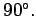

Inhalt Index DeskTop Bronstein

 Geometrie Sphärische Trigonometrie Grundbegriffe der Geometrie auf der Kugel Polardreieck
Geometrie Sphärische Trigonometrie Grundbegriffe der Geometrie auf der Kugel Polardreieck


Die Endpunkte P1 und P2 eines Kugeldurchmessers, der senkrecht zur Ebene eines Großkreises g, Polare genannt, errichtet ist, werden Pole genannt.
Der sphärische Abstand von einem Pol bis zu einem beliebigen Punkt des Großkreises g beträgt stets  Die Richtung der Polaren wird von außen festgelegt: Beim Durchlaufen der Polaren in der gewählten Richtung heißt der links liegende Pol Linkspol, der rechts liegende Rechtspol.